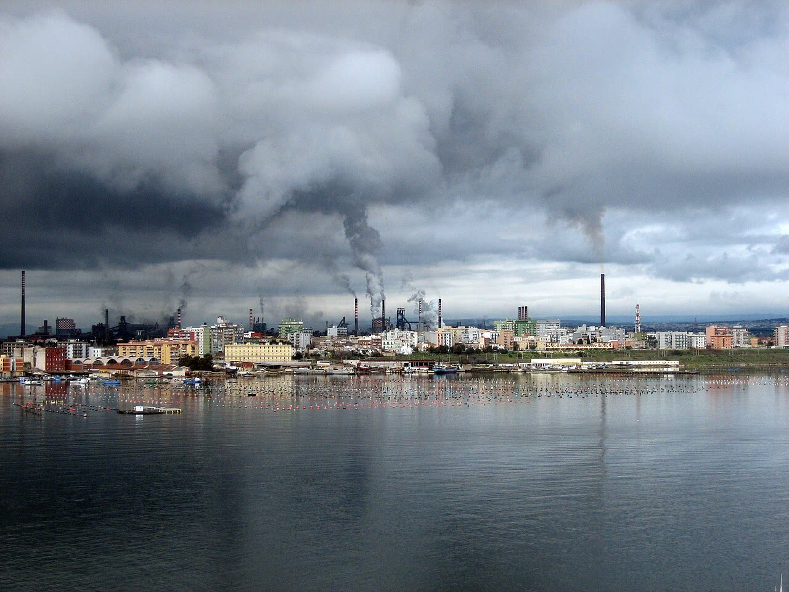

Ex Ilva, offerte segrete di Arvedi e Jindal: fino a 390 milioni pubblici in bilico
Nessuno dice quanto offrono né quanto chiedono allo Stato. Prima di un altro euro, il governo metta in pubblico il conto: vendere ad Arvedi, a Jindal o chiudere.
Redazione Contrappunto · aggiornato il 09.11.2026


L'ex Ilva è il più grande gruppo siderurgico italiano: l'acciaieria di Taranto più gli stabilimenti di Genova, Novi Ligure e Racconigi. Oggi si chiama Acciaierie d'Italia ed è in amministrazione straordinaria: la gestiscono commissari nominati dal governo, che cercano un compratore dal luglio 2024. Il 29 ottobre la Cassazione ha confermato lo stop, ordinato dalla Corte d'appello di Milano per amianto e polveri sottili, dell'area a caldo di Taranto, quella che fa l'acciaio; dal 3 novembre gli altiforni sono in spegnimento. Le offerte vincolanti scadevano alla mezzanotte dell'8 novembre. Conta perché il gruppo ha 9.626 dipendenti, la cassa integrazione è chiesta fino a 8.622, e perché dal 2012 lo Stato ci ha messo miliardi: se nessuno compra, il conto resta a noi.
Vedi di più: 18 parole spiegate, cosa si racconta
Cosa si raccontaIl racconto del giorno è una gara. «Sfida a due» per Il Sole 24 Ore e Il Foglio, «colpo di scena» Arvedi per il Giornale, una «intonazione decisamente italiana» per HuffPost; ANSA, Tgcom24 e Reuters danno la notizia secca. Il Sole scrive che entrambi puntano ai forni elettrici. Solo QN si chiede «I miliardi pubblici a cosa servono?». Nessuna testata letta dice che prezzo e condizioni delle offerte non sono pubblici, né parla dei 390 milioni prestiti nel 2026 e di chi li ripaga. Reazioni di sindacati e Comune di Taranto oggi: non le abbiamo trovate. [Il Sole 24 Ore] [Il Foglio] [il Giornale] [HuffPost Italia] [ANSA] [Tgcom24] [Reuters (su MarketScreener)] [Quotidiano Nazionale]
- Acciaierie d'Italia (AdI) e Ilva in amministrazione straordinaria
- Ilva è la società storica, proprietaria degli impianti; Acciaierie d'Italia quella che li gestisce. Sono entrambe in amministrazione straordinaria, la procedura per le grandi imprese in crisi: commissari nominati dal governo tengono in vita l'azienda e la vendono.
- Area a caldo e area a freddo
- L'area a caldo fa l'acciaio da minerale e carbone: cokerie, altiforni, acciaierie. L'area a freddo lamina e lavora l'acciaio già fatto (la laminazione trasforma lastre in rotoli e lamiere).
- Forno elettrico e DRI
- Il forno elettrico fonde rottame o ferro preridotto (DRI, ottenuto dal minerale con il gas invece del carbone). È il modo con cui le acciaierie europee sostituiscono gli altiforni; Arvedi lo usa già a Cremona.
- Bramme
- Grandi lastre di acciaio grezzo, il semilavorato che poi si lamina.
- AIA
- Autorizzazione integrata ambientale: il permesso con cui lo Stato dice a una grande fabbrica quanto può produrre e inquinare. Per Taranto il tetto è 6 milioni di tonnellate l'anno.
- Offerta vincolante e condizioni sospensive
- Un'offerta vincolante impegna chi la fa, se accettata. Una condizione sospensiva la congela finché un fatto non si avvera: qui, per Arvedi, il gradimento di istituzioni e comunità di Taranto.
- CIGS
- Cassa integrazione straordinaria: l'Inps, cioè lo Stato, paga ai dipendenti sospesi una parte dello stipendio. 8.622 è il tetto chiesto da AdI, non il numero di chi è già a casa.
- Prededuzione e responsabilità solidale
- Prededuzione vuol dire che lo Stato si ripaga per primo dal ricavato della vendita, prima degli altri creditori (salvo i lavoratori). Responsabilità solidale: se il ricavato non basta, il debito lo deve il compratore.
- Prestito di salvataggio
- Un aiuto di Stato che Bruxelles permette a un'impresa in difficoltà per pochi mesi: fino a 390,8 milioni per AdI, decisione del 9 febbraio 2026. Poi servono un piano di ristrutturazione o di liquidazione, o la prova del rimborso.
- Invitalia, Cdp, Delfin
- Invitalia è l'agenzia pubblica per gli investimenti: dal 2021 era socia di Acciaierie d'Italia al 38%, con ArcelorMittal. Cdp è Cassa depositi e prestiti, controllata dal Tesoro; con Delfin, una holding privata, era nella cordata AcciaItalia del 2016.
- Patrimonio destinato
- Soldi raccolti da Ilva in amministrazione straordinaria con obbligazioni, non stanziati dal bilancio dello Stato: per questo c'è chi li conta come soldi pubblici e chi no.
- Bedrock Industries
- Fondo americano: nel 2025 offrì per l'ex Ilva, come Flacks con Steel Business Europe, un euro (il Sole citato dal Foglio). Non ha partecipato a questa gara.
- I 5 miliardi di Meloni
- Il 20 ottobre Reuters ha scritto che la presidente del Consiglio Giorgia Meloni ha detto di aver «committed», impegnato, circa 5 miliardi nell'acciaieria da quando governa, cioè dal 2022. Non dice quali voci: per questo li mettiamo nella forbice con un perimetro non dichiarato.
- UPB
- Ufficio parlamentare di bilancio: l'organismo indipendente che controlla i conti pubblici per il Parlamento. Né l'UPB né la Corte dei conti hanno pubblicato, per quanto abbiamo trovato, un totale dei costi dell'ex Ilva.
- Indotto e Aigi
- L'indotto sono le imprese che lavorano in appalto per l'acciaieria (manutenzioni, servizi). L'Aigi è l'associazione che ne raccoglie la maggior parte.
- Contratti di sviluppo
- Finanziamenti e contributi pubblici a grandi investimenti industriali.
- MIMIT e Project Sider
- Il MIMIT è il ministero delle Imprese e del made in Italy, guidato da Adolfo Urso: autorizza la vendita. Project Sider è, secondo AGI e altre testate, l'advisor dei commissari.
- Federacciai e Flacks Group
- Federacciai è l'associazione delle imprese siderurgiche italiane: ad agosto aveva riunito una cordata per la sola area a freddo. Flacks Group è un fondo americano, in trattativa con i commissari dall'inizio del 2026.
- Entro l'8 novembre due offerte per tutti gli impianti dell'ex Ilva: del gruppo Arvedi di Cremona e dell'indiana Jindal. Fuori Federacciai e Flacks.
- Arvedi vuole l'ok di istituzioni e comunità di Taranto. Prezzo, posti di lavoro e aiuti chiesti allo Stato non sono pubblici.
- Nel 2026 lo Stato ha autorizzato prestiti fino a 390 milioni: si ripagano dal ricavato della vendita e, per i primi 149, se non basta, dal compratore.
Le testate raccontano una gara: «sfida a due» per il Sole 24 Ore e il Foglio, «colpo di scena» Arvedi per il Giornale. Il fatto regge: due offerte vincolanti per tutti gli impianti. Ma una gara si vince sul prezzo, e il prezzo non lo conosce nessuno. Sui dettagli si inciampa: per il Giornale Arvedi è «bresciano», per il Sole in cassa integrazione vanno in 9.600, ma la richiesta è per 8.622 su 9.626. [6] [9] [7] [1] [5] [15]
Il segnale più chiaro è chi non c'è. Federacciai si è ritirata per costi, ritorni lunghi ed energia, secondo AGI e il Sole. Flacks vuole prima vedere Meloni e, per HuffPost, un prestito pubblico di almeno un miliardo. Arvedi offre, ma solo con il gradimento di istituzioni e comunità di Taranto. Così la scelta passa dal prezzo alla politica. [6] [8] [7] [5]
Chi paga? Dal 2012 lo Stato ci ha messo da 1,9 a oltre 3,6 miliardi; i 5 che Meloni dice impegnati dal 2022 non hanno perimetro. Solo nel 2026 prestiti autorizzati fino a 390 milioni, il massimo concesso da Bruxelles. Si ripagano per primi dal ricavato della vendita; se non basta, per i primi 149 paga il compratore. A marzo Jindal aveva accettato di rispondere di quel prestito, di Arvedi non si sa. Con un prezzo simbolico, paga chi compra o lo Stato. [16] [5] [18] [24] [17]
Poi c'è il conto futuro. Con Bruxelles il governo si è impegnato: chi compra fa fino a tre forni elettrici, per tutti i 6 milioni di tonnellate autorizzati. Urso promette contratti di sviluppo pubblici. Il piano di Jindal noto finora ne fa 2 con il forno e importa il resto dall'Oman. [17] [16] [8]
Il nostro giudizio, da liberali. Dire che lo Stato non deve metterci un euro non basta: anche chiudere costa, tra cassa integrazione, bonifiche e prestiti persi. Per questo, prima di firmare, il governo metta in pubblico il conto delle tre strade: Arvedi, Jindal, chiusura. Stessi strumenti per tutti e due; niente Invitalia socia, ricetta provata nel 2021 e finita in amministrazione straordinaria; il prestito si restituisce davvero. Il consenso di Taranto conta, ma un'offerta si giudica dal prezzo e dal piano. [16]
La verifica punto per punto26 passaggi, 28 fonti
Qui sotto ogni cosa scritta sopra, una per una, con le fonti. Confermato: lo dice un documento originale o più fonti lette. Plausibile: lo riportano fonti serie, ma non abbiamo letto l'originale. Discordante: le fonti danno numeri diversi, e diciamo quali. Ipotesi e Opinione sono il nostro ragionamento, separato dai fatti.
La gara: chi c'è e chi no
Si vende a forni spenti. Il 27 luglio la Corte d'appello di Milano, su reclamo dei Genitori Tarantini, ha ordinato lo stop dell'area a caldo per amianto e polveri sottili; il 29 ottobre la Cassazione l'ha confermato. Dal 3 novembre gli altiforni si spengono.
Nota dei commissari (Giovanni Fiori, Giancarlo Quaranta, Davide Tabarelli per AdI; Alessandro Danovi, Francesco Di Ciommo, Daniela Savi per Ilva): due offerte vincolanti, di Arvedi e Jindal Steel International, «entrambe relative all'acquisto di tutti i complessi aziendali attivi».
Non hanno offerto la cordata di Federacciai né Flacks, che si è detto «in grado di aggiornare l'offerta solo dopo aver incontrato la premier Giorgia Meloni».
Federacciai avrebbe rinunciato per costi, ritorni lunghi ed energia (fonte unica: AGI e Sole). Flacks, per HuffPost, chiedeva un «prestito dallo Stato di almeno un miliardo».
Arvedi, di Cremona, fondato nel 1963 da Giovanni Arvedi, ha circa 6.400 dipendenti; ricavi 2025 di 5,5 miliardi per il Giornale, circa 6 per HuffPost e Teleborsa. Ad agosto aveva firmato con Federacciai (Domani); nel 2016 era in AcciaItalia con Cdp e Delfin.
Jindal Steel International è il gruppo indiano di Naveen Jindal (non JSW). Era nella gara chiusa a gennaio 2025, non in quella di settembre; il 20 marzo 2026 ha offerto per tutto.
I commissari ora verificano le offerte, senza data per la scelta; poi il MIMIT autorizza. A maggio il Sole scriveva di un piano B di Palazzo Chigi su Arvedi.
Le offerte: cosa si sa e cosa no
Finarvedi, la finanziaria del gruppo: «Ci siamo sentiti come italiani, imprenditori siderurgici, imprenditori cristiani di fare la nostra offerta subordinata ad alcune condizioni sospensive». Tra queste, l'approvazione dei suoi piani da istituzioni e comunità di Taranto, «in assenza dei quali riteniamo non sarà possibile procedere».
Prezzo, investimenti, posti di lavoro e aiuti chiesti allo Stato non sono pubblici; le cifre che circolano vengono da piani vecchi o dal Fatto, a pagamento.
Il piano noto di Jindal: un forno elettrico da 2 milioni di tonnellate più 4 milioni di bramme dall'Oman, fino ai 6 del tetto AIA. Dopo il 27 luglio si è detto pronto a prendere anche l'area a caldo. Affaritaliani (3 novembre) gli attribuiva una mini-Ilva con 3-4mila addetti: voce non verificata.
Con Bruxelles il governo si è impegnato: chi compra chiude l'area a carbone e costruisce «up to three electric furnaces to cover the entire authorised production capacity».
Il ministro delle Imprese Adolfo Urso, in Parlamento: l'investitore farà i forni elettrici «con il contributo, ovviamente, dei contratti di sviluppo che lo Stato può fornire».
I fondi del progetto pubblico DRI passano al MIMIT, usabili con contratti di sviluppo.
Chi paga: i soldi già spesi
Quanto ha messo lo Stato dal 2012 dipende dal perimetro: prestiti a tasso di mercato (per il governo non sono costi), 400 milioni di crediti garantiti (privati per il governo, aiuto di Stato per Bruxelles), 250 milioni da obbligazioni di Ilva, cassa integrazione, prestiti 2026. Corte dei conti e UPB: nessuna stima.
Nel 2026 lo Stato ha autorizzato prestiti fino a 390 milioni, il tetto concesso da Bruxelles: 149 concessi il 26 marzo, 100 autorizzati, 141 previsti da un decreto in conversione. Rimborsi: nessuna fonte letta ne parla.
Per legge i prestiti pubblici si ripagano in prededuzione dal ricavato della vendita, dopo i soli lavoratori. Se non basta, del prestito da 149 milioni risponde il compratore: a marzo Jindal e Flacks avevano accettato, per Arvedi non si sa.
Chi paga: i lavoratori
AdI ha chiesto la cassa integrazione per al massimo 8.622 dipendenti su 9.626; il Sole («per 9.600 di loro, di cui 8.600 a Taranto»), ripreso dal Foglio, confonde organico e tetto. Trattativa al ministero del Lavoro il 10 novembre.
Poi l'indotto, le imprese in appalto: a settembre l'Aigi ha avviato 2.500 licenziamenti, sospesi su richiesta del governo. Le stime dei posti a rischio misurano cose diverse.
Se nessuno compra, per Affaritaliani resta l'amministrazione straordinaria e torna la vendita a pezzi. Il 27 ottobre governo e sindacati hanno firmato un verbale che apre a una presenza pubblica; l'incontro promesso entro metà novembre non è convocato (Foglio). A settembre Alfredo Mantovano, sottosegretario a Palazzo Chigi, apriva allo Stato socio.
Cosa sbagliano le testate
Il Giornale scrive «gruppo bresciano» (è di Cremona), «offerte per l'area a freddo» (sono per tutto) e Arvedi mai in gara (c'era nel 2016). Teleborsa: Arvedi «non aveva manifestato un interesse in precedenza» (smentito da Domani). QN mette Jindal nella gara di settembre 2025; Tgcom24 e Reuters attribuiscono lo stop alla Cassazione.
Tra le righe
Nessuna delle due offerte sta in piedi senza denaro pubblico.
Ragionamento: Chi si è ritirato lo ha fatto per i costi (Federacciai) o chiedendo un prestito pubblico (Flacks); a maggio Jindal chiedeva incentivi e una revisione dell'AIA (Sole); Urso ha già promesso i contratti di sviluppo; i forni elettrici sono un impegno preso con Bruxelles. Contro: le offerte non le abbiamo viste.
Per quanto se ne sa, le offerte non coprono con forni elettrici i 6 milioni di tonnellate promessi alla Commissione.
Ragionamento: Il piano noto di Jindal ne fa 2 con il forno e importa il resto; per Arvedi c'è solo il Fatto, a pagamento, che parla di due forni. Se le offerte di novembre sono diverse, l'ipotesi cade.
Con le condizioni sospensive Arvedi sposta la scelta dal prezzo al consenso politico locale e nazionale.
Ragionamento: Un'offerta che vale solo con l'ok di istituzioni e comunità di Taranto si giudica anche fuori dal bando. A maggio il Sole parlava di un piano B di Palazzo Chigi su Arvedi; HuffPost oggi ipotizza lo Stato «partner». È una lettura della mossa, non un'accusa.
Lo Stato potrebbe entrare come socio accanto ad Arvedi.
Ragionamento: Lo scrivono come ipotesi HuffPost («potrebbe») e il Fatto (Invitalia), a pagamento; secondo Affaritaliani e il Foglio, il 27 ottobre Palazzo Chigi ha aperto con i sindacati a una presenza pubblica. Nessun documento lo conferma.
I prestiti del 2026, fino a 390 milioni, sono a rischio se il prezzo sarà simbolico e il compratore non risponderà del debito.
Ragionamento: Si ripagano dal ricavato della vendita; nel 2025 i fondi americani Bedrock e Flacks offrivano un euro (il Sole citato dal Foglio) e Jindal ne offriva circa 200 milioni. La garanzia del compratore c'è per legge sul prestito da 149 milioni; non sappiamo se Arvedi l'abbia accettata.
Il nostro punto
Anche chiudere costa: zero euro non è una risposta. Prima di un altro euro, il conto delle tre strade (Arvedi, Jindal, chiusura) in pubblico; stessi strumenti per tutti, niente Invitalia socia, prestito restituito.
Fonti28, tutte con il link
- Ex Ilva, Arvedi e Jindal avanzano offerte. Il gruppo italiano: «Nostra proposta subordinata a OK di istituzioni e popolazione di Taranto» (9 novembre 2026, con la nota dei commissari) (LaPresse) · consultata il 09.11.2026
- ex Ilva, AdI ha ricevuto offerte solo da Jindal e Arvedi (9 novembre 2026) (Teleborsa (ANSA)) · consultata il 09.11.2026
- Ex Ilva, ricevute due offerte vincolanti da indiana Jindal e Arvedi (9 novembre 2026) (Reuters (su MarketScreener)) · consultata il 09.11.2026
- Due offerte per l'ex Ilva, sono Jindal e l'italiana Arvedi (9 novembre 2026) (ANSA) · consultata il 09.11.2026
- Andrea Montanari, Ex Ilva, doppia offerta di Jindal e Arvedi per gli impianti. Ma la partita della vendita riparte ancora da zero (9 novembre 2026) (Quotidiano Nazionale) · consultata il 09.11.2026
- Domenico Palmiotti, Ex Ilva, è sfida a due: sul tavolo le offerte di Arvedi e Jindal (9 novembre 2026) (Il Sole 24 Ore) · consultata il 09.11.2026
- Colpo di scena sull'Ilva, Arvedi scende in campo. Cosa può succedere adesso (9 novembre 2026) (il Giornale) · consultata il 09.11.2026
- Ex Ilva, non è finita. Da Arvedi e Jindal offerte per gli asset di Acciaierie d'Italia (9 novembre 2026) (HuffPost Italia) · consultata il 09.11.2026
- Ex Ilva, la gara infinita. Cronaca di un flop in tre atti (9 novembre 2026) (Il Foglio) · consultata il 09.11.2026
- Ex Ilva, Jindal e l'italiana Arvedi in corsa per l'acquisizione degli stabilimenti (9 novembre 2026) (Tgcom24) · consultata il 09.11.2026
- Ex Ilva, sul tavolo dei commissari due offerte (9 novembre 2026) (Cremonaoggi) · consultata il 09.11.2026
- Due offerte per l'ex Ilva: in campo Arvedi e Jindal (9 novembre 2026) (Corriere di Taranto) · consultata il 09.11.2026
- Jindal si fa avanti per l'ex Ilva ormai a forni spenti (9 novembre 2026) (Stylo24) · consultata il 09.11.2026
- Ilva: Arvedi e Jindal in corsa per comprare Acciaierie d'Italia (9 novembre 2026, a pagamento: letta solo la parte visibile) (Il Fatto Quotidiano) · consultata il 09.11.2026
- L. Goj, Ex Ilva, la vendita infinita (3 novembre 2026) (Affaritaliani) · consultata il 09.11.2026
- L'ex ILVA di Taranto: vicende societarie, finanziamenti statali, profili ambientali e tutela occupazionale (tema di documentazione, 14 ottobre 2026; riporta alla lettera la risposta della sottosegretaria Bergamotto del 24 gennaio 2025) (Camera dei deputati, Servizio Studi) · consultata il 09.11.2026
- Commission approves €390 million Italian rescue loan to Acciaierie d'Italia under EU State aid rules (IP/26/328, 9 febbraio 2026) (Commissione europea (copia su sipotra.it)) · consultata il 09.11.2026
- Carmine Fotina, Ex Ilva, Palazzo Chigi's Plan B focuses on Arvedi and Qatar Steel (5 maggio 2026) (Il Sole 24 Ore (edizione inglese)) · consultata il 09.11.2026
- Ex Ilva, altri 240 milioni di prestito (22 maggio 2026) (Economy Magazine) · consultata il 09.11.2026
- G. Meneghello, Ex Ilva, il progetto Dri-idrogeno perde i fondi dedicati (14 luglio 2026) (QualEnergia) · consultata il 09.11.2026
- La cordata italiana c'è: presentata una proposta per l'ex Ilva (18 agosto 2026) (Domani) · consultata il 09.11.2026
- Ilva: nasce AcciaItalia, cordata Cdp-Arvedi-Delfin (29 giugno 2016, lancio ANSA) (Blitz Quotidiano (ANSA)) · consultata il 09.11.2026
- Sergio Rizzo, Storia di un lungo e costoso accanimento terapeutico (29 gennaio 2026) (L'Espresso) · consultata il 30.10.2026
- Giselda Vagnoni, Italy's top court set to rule on future of troubled Taranto steelworks (20 ottobre 2026) (Reuters (ripreso da Kitco)) · consultata il 30.10.2026
- L'ex Ilva fa le prime «vittime»: 2.500 lettere di licenziamento (4 settembre 2026) (Avvenire) · consultata il 09.11.2026
- Ex Ilva, il governo chiederà di sospendere i licenziamenti: oggi niente decreto in Cdm (16 settembre 2026) (LaPresse) · consultata il 09.11.2026
- Nicholas Masetti e Ottavia Firmani, Ex Ilva, stop ai licenziamenti: «Lo Stato può entrare in campo» (9 settembre 2026) (Quotidiano Nazionale) · consultata il 09.11.2026
- Fragilità d'acciaio. Il racconto dell'ILVA fra transizione ambientale e politica industriale (30 settembre 2025) (Assonime), p. 106-109 · consultata il 30.10.2026
Testo preparato con strumenti di intelligenza artificiale e pubblicato senza revisione umana. Come lavoriamo